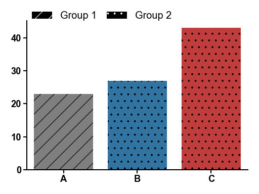

aaanalysis.plot_legend
- aaanalysis.plot_legend(ax=None, dict_color=None, list_cat=None, labels=None, loc='upper left', loc_out=False, y=None, x=None, ncol=3, labelspacing=0.2, columnspacing=1.0, handletextpad=0.8, handlelength=2, fontsize=None, fontsize_title=None, weight='normal', fontsize_weight='normal', marker=None, marker_size=10, lw=0, linestyle=None, edgecolor=None, hatch=None, hatchcolor='white', title=None, title_align_left=True, **kwargs)[source]
Sets an independntly customizable plot legend.
Legends can be flexbily adjusted based categories and colors provided in
dict_colordictionary. This functions comprises the most convinient settings forfunc:`matplotlib.pyplot.legend.- Parameters:
ax (
Optional[Axes]) – The axes to attach the legend to. If not provided, the current axes will be used.dict_color (
Optional[Dict[str,str]]) – A dictionary mapping categories to colors.list_cat (
Optional[List[str]]) – List of categories to include in the legend (keys ofdict_color).labels (
Optional[List[str]]) – Labels for legend items corresponding to given categories.loc_out (
bool) – IfTrue, sets automaticallyx=0andy=-0.25if they areNone.y (
Union[int,float,None]) – The y-coordinate for the legend’s anchor point.x (
Union[int,float,None]) – The x-coordinate for the legend’s anchor point.ncol (
int) – Number of columns in the legend, at least 1.labelspacing (
Union[int,float]) – Vertical spacing between legend items.columnspacing (
Union[int,float]) – Horizontal spacing between legend columns.handletextpad (
Union[int,float]) – Horizontal spacing bewtween legend handle (marker) and label.fontsize (
Union[int,float,None]) – Font size for the legend text.fontsize_title (
Union[int,float,None]) – Font size for the legend title.weight (
str) – Weight of the font.fontsize_weight (
str) – Font weight for the legend title.marker (
Union[str,int,list,None]) – Marker for legend items. Lines (‘-’) only visiable iflw>0.marker_size (
Union[int,float,List[Union[int,float]]]) – Marker size for legend items.lw (
Union[int,float]) – Line width for legend items. If negative, corners are rounded.linestyle (
Union[str,list,None]) – Style of line. Only applied to lines (marker='-').edgecolor (
Optional[str]) – Edge color of legend items. Not applicable to lines.hatch (
Union[str,List[str],None]) – Filling pattern for default marker. Only applicable whenmarker=None.hatchcolor (
str) – Hatch color of legend items. Only applicable whenmarker=None.title_align_left (
bool) – Whether to align the title to the left.**kwargs – Furhter key word arguments for
matplotlib.axes.Axes.legend.
- Returns:
Axes on which legend is applied to.
- Return type:
ax
Examples
>>> import matplotlib.pyplot as plt >>> import seaborn as sns >>> import aaanalysis as aa >>> data = {'Classes': ['A', 'B', 'C'], 'Values': [23, 27, 43]} >>> colors = aa.plot_get_clist() >>> aa.plot_settings() >>> sns.barplot(x='Classes', y='Values', data=data, palette=colors, hatch=["/", ".", "."], hue="Classes", legend=False) >>> sns.despine() >>> dict_color = {"Group 1": "black", "Group 2": "black"} >>> aa.plot_legend(dict_color=dict_color, ncol=2, y=1.1, hatch=["/", "."]) >>> plt.tight_layout() >>> plt.show()
(
Source code,png,hires.png,pdf) Notes
Markers can be None (default), lines (‘-’) or one of the matplotlib markers.
See also
More examples in Plotting Prelude.
Hatches, which are filling patterns.
matplotlib.lines.Line2Dfor available marker shapes and line properties.matplotlib.axes.Axes, which is the core object in matplotlib.matplotlib.pyplot.gca()to get the current Axes instance.
{kind=link}
{kind=link}